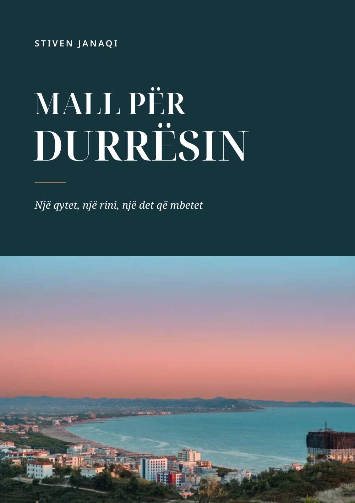

Filozofia pas punës
Nga qar tësia te veprimi.
Stiven Catalyst është ndërtuar mbi një ide: rezultatet më të mira nisin me mendim më të qartë, dhe mendimi më i qartë ka rëndësi vetëm kur ndryshon atë që ndodh më pas.
Pas punës
Stiven Janaqi
Operacione & udhëheqje · Milja e fundit · Hotele
Stiveni punon në operacione prej më shumë se dhjetë vitesh, rreth tetë prej tyre duke drejtuar ekipe: në shitjen me pakicë dhe me shumicë në Shqipëri, pastaj në logjistikën e miljes së fundit dhe në hotele në Gjermani. Në Shqipëri drejtoi dyqane dhe një biznes me shumicë, dhe ndërtoi një rrjet kombëtar me 61 rishitës aktivë. Në Gjermani nisi sërish nga e para, si shpërndarës pakosh dhe night auditor, dhe u rikthye hap pas hapi te drejtimi.
Si Area Manager për operacionet e miljes së fundit në vitin 2025, drejtoi katër shefa turni dhe tetë dispeçerë, me rreth 250 shoferë në rrugë. Që nga nëntori 2025 është Night Manager në një hotel të grupit Radisson në Frankfurt, dhe që nga janari 2026 koordinon nga shtëpia edhe mbi 80 automjete, si dispeçer me kohë të pjesshme në miljen e fundit.
Ai e ka parë nga afër si një dorëzim i humbur, një standard i paqartë ose një turn i nxituar e ndryshojnë numrin në një panel treguesish. Shkruan nga kjo perspektivë praktike dhe ndërton mjete të vogla që i ndihmojnë njerëzit ta shohin punën, të bëjnë pyetje më të mira dhe ta bëjnë turnin e ardhshëm më të lehtë për t'u drejtuar.
- vite në operacione
- 10+
- shefa turni dhe dispeçerë të drejtuar
- 12
- shoferë në rrugë, të drejtuar tërthorazi
- ~250
- automjete të koordinuara në distancë
- 80+
Përvoja
Dhje të vite pranë punës.
Shitje me pakicë dhe me shumicë në Shqipëri, pastaj logjistikë e miljes së fundit dhe hotele në Gjermani: vendet nga vijnë esetë dhe mjetet.
-
2026 – sot
Dispeçer i miljes së fundit, në distancë dhe me kohë të pjesshme
Koordinim nga shtëpia i mbi 80 automjeteve dhe mbi 100 shoferëve: linjat, shoferët, vonesat dhe problemet gjatë shpërndarjes.
-
2025 – sot
Menaxhim i turnit të natës në hotel
Night Manager në një hotel të grupit Radisson në Frankfurt që nga nëntori 2025: turni i natës dhe recepsioni.
-
2025
Team Leader, pastaj Area Manager, operacione të miljes së fundit
U ngrit në detyrë pas pesë muajsh. Dëmet, dorëzimet e paplota, vonesat dhe koha e ngarkimit, të ndjekura çdo ditë me shefat e turnit dhe dispeçerët.
-
2021 – 2024
Shpërndarje pakosh, dispeçim në miljen e fundit dhe night audit në hotel
Rifillim si shpërndarës pakosh, pastaj dispeçim për mbi 70 shoferë në turn në një stacion dorëzimesh; night audit dhe recepsion në hotele në Frankfurt, për një periudhë krahas shpërndarjes së pakove.
-
2015 – 2021
Menaxhim në shitje me pakicë dhe me shumicë në Shqipëri
Menaxher dyqani, shef departamenti, menaxher i përgjithshëm shitjesh dhe cluster manager. Ekipe deri në 16 veta; një rrjet kombëtar me 61 rishitës aktivë që e ndërtoi vetë, një kanal i lidhur me rritjen e xhiros me rreth 30–40%.
-
2012 – 2015
Bachelor në Administrim Biznesi
Universiteti i Durrësit, nota përfundimtare 9,38 / 10, me bursë, krahas punës në dyqanet e një kompanie telekomunikacioni.
- Gjuhët
- Shqip (gjuhë amtare) · Anglisht C1 · Italisht C1 · Gjermanisht B1
- Metoda dhe sisteme
- Lean · 6S · Gemba walks · Pareto · 5 Whys · SAP · OPERA PMS
Pika është qar tësia. Katalizat ori është lëviz ja.
Stiven Catalyst ekziston për ta kthyer vëzhgimin në kuptim, kuptimin në veprim dhe veprimin në përparim.
Shenja në zemër të identitetit është pika e fjalisë “Menaxhim pa teatër.”, e rrethuar me dorë. Pika është çasti kur një problem i ndërlikuar bëhet i qartë: u tha, u bë, pa shfaqje. Rrethi është shenja që një menaxher e bën me stilolaps në një raport, rreth numrit që ka rëndësi. Por vetëm qartësia nuk mjafton. Kuptimi i Catalyst është ajo që vjen pas: krijimi i kushteve që një ide, një njeri, një ekip ose një sistem të ecë përpara.
Ngjyrat janë pak, me qëllim. E zeza i jep punës disiplinë dhe seriozitet; e bardha krijon hapësirë për të menduar. Bluja është theksi i vetëm: qartësi, analizë dhe perspektivë, dhe ngjyra e pikës. Ari ruhet për momente të vogla vlere dhe theksi.
Shiko qartë. Mendo ndryshe. Vepro me qëllim.
Publikimi trajton udhëheqjen, operacionet, mikpritjen, logjistikën, shërbimin, përgjegjshmërinë, dizajnin e proceseve dhe realitetin e përditshëm të drejtimit të njerëzve. Është edhe një arkiv mjetesh dhe sistemesh të ndërtuara për ta bërë punën më të qartë dhe më të besueshme.

Libri
Mall për Durrësin
Një qytet, një rini, një det që mbetet
Shtatë kapituj për rininë në Durrës: shokët, ikjet dhe kthimet. Shfletoje faqe pas faqeje, si një libër të vërtetë.
Hape librinVazhdo leximin